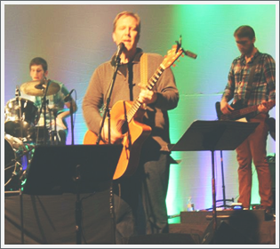

|  |
Testing a link, another LINK, and a Link. How interesting...
Since Harvest began in 1996, our mission has been to equip young adults for ministry while providing a resource to the local church . We accomplish this mission by inviting young adults to serve as team members on summer teams, conferences, and other ministry events.
I am also excited about the opportunities we have to be a part of local churches and other ministries. Harvest, at the core of it’s mission, is still available to go and serve as a worship team for conferences, events, outreaches and other gatherings.
In addition to the group coming, I am also available, with my guitar, to provide a more simple sound of special music or concert at your church or event. And have also enjoyed speaking for a number of occasions lately.
My dreams and aspirations of Harvest are to continue being faithful-doing, reaching, growing and involving people in a dramatic way in the kingdom! Not just something in college, but faith-every day, every way.
Since Harvest began in 1996, our mission has been to equip young adults for ministry while providing a resource to the local church . We accomplish this mission by inviting young adults to serve as team members on summer teams, conferences, and other ministry events. I am also excited about the opportunities we have to be a part of local churches and other ministries. Harvest, at the core of it’s mission, is still available to go and serve as a worship team for conferences, events, outreaches and other gatherings. In addition to the group coming, I am also available, with my guitar, to provide a more simple sound of special music or concert at your church or event. And have also enjoyed speaking for a number of occasions lately. My dreams and aspirations of Harvest are to continue being faithful-doing, reaching, growing and involving people in a dramatic way in the kingdom! Not just something in college, but faith-every day, every way. |
| Website design © Amelia Fuesz |